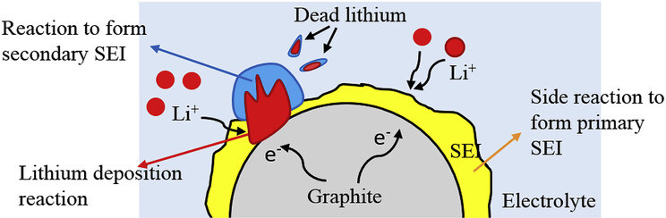
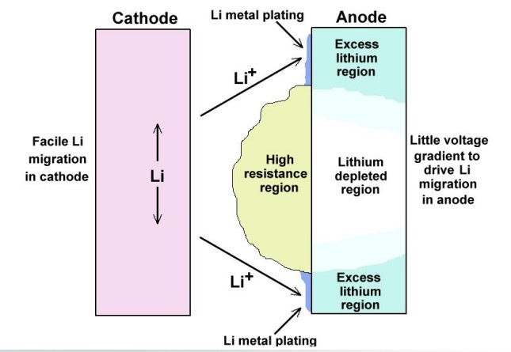
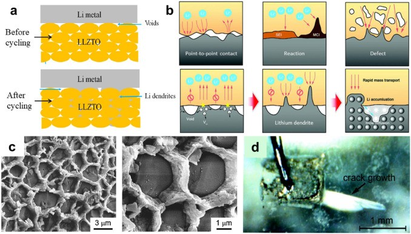
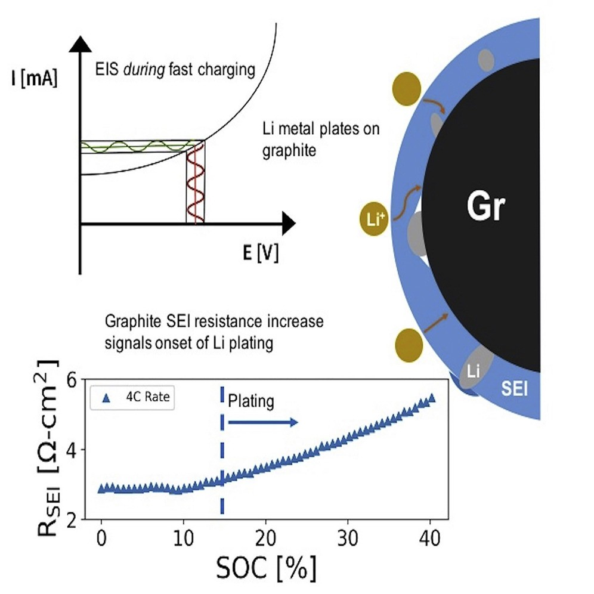
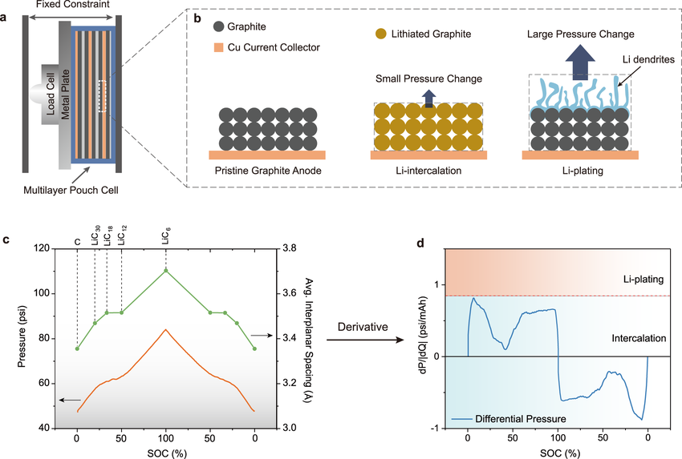
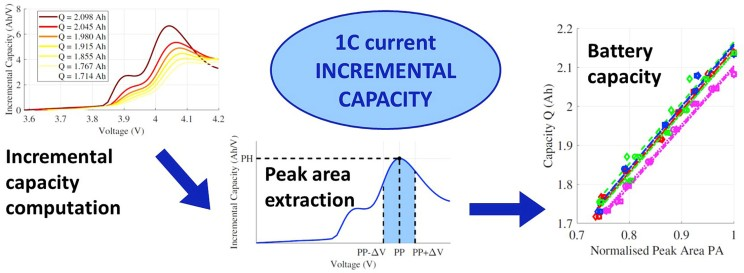
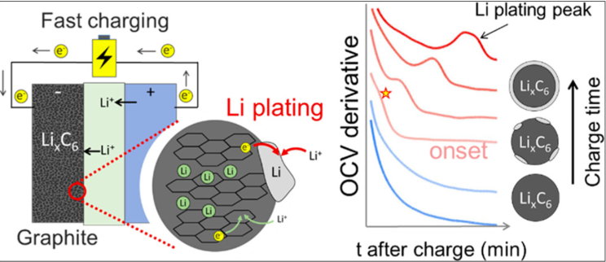
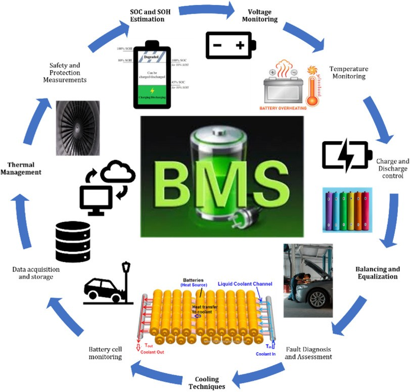

Lithium deposition represents one of the most destructive degradation mechanisms affecting modern battery systems, particularly in applications demanding fast charging and extreme operating conditions. This phenomenon, where metallic lithium accumulates on battery anodes instead of properly intercalating into the electrode material, poses significant risks to battery performance, longevity, and safety.
Recent advances in detection methodologies, including electrochemical impedance spectroscopy, differential pressure sensing, and incremental capacity analysis, are revolutionizing how researchers and engineers monitor battery health in real-time. These innovations promise to enable safer fast-charging protocols while preventing catastrophic battery failures that can lead to thermal runaway and fire hazards.

Understanding Lithium Deposition: The Silent Battery Killer
Lithium deposition, also known as lithium plating, occurs when lithium ions accumulate on the anode surface as metallic deposits rather than intercalating into the electrode material as intended. This process fundamentally disrupts the normal electrochemical operation of lithium-ion batteries, creating a cascade of problems that can ultimately render the battery unsafe and unusable. The mechanism begins when the anode potential drops close to or below the lithium/lithium-ion equilibrium potential of 0V versus Li/Li+, causing lithium ions to undergo reduction and form solid metallic lithium rather than properly inserting into the graphite layers.

The conditions that promote lithium deposition are increasingly common in modern battery applications. Fast charging protocols, which are essential for electric vehicle adoption, create high current densities that can overwhelm the anode's ability to intercalate lithium ions efficiently. Low-temperature operation, another critical requirement for electric vehicles in cold climates, significantly slows the intercalation kinetics and makes lithium plating more likely to occur. Additionally, overcharging scenarios, whether intentional or accidental, can drive the anode potential into the lithium deposition regime, creating dangerous conditions within the battery.

The morphology of lithium deposits varies significantly depending on operating conditions and can take several forms, including dendritic structures that pose particular safety risks. Research has shown that lithium deposits can grow as both dendritic and granular formations, with dendritic growth being particularly concerning due to its potential to penetrate the battery separator. These dendrites can create internal short circuits, leading to thermal runaway and potential fire hazards. The deposits also consume active lithium within the battery, directly contributing to capacity loss and shortened cycle life.
Detection Methods: From Laboratory to Real-World Applications
Electrochemical Impedance Spectroscopy (EIS)
Electrochemical impedance spectroscopy has emerged as one of the most sensitive and informative methods for detecting lithium deposition in battery systems. This technique involves applying small-amplitude alternating current signals across a range of frequencies and measuring the battery's impedance response. The power of EIS lies in its ability to deconvolute complex electrochemical processes occurring within the battery, revealing subtle changes that indicate the onset of lithium deposition.

Recent research has demonstrated that distribution of relaxation times (DRT) analysis of EIS data can reveal distinctive peaks associated with lithium plating that are not present in healthy batteries. This approach has proven effective in both experimental coin cells and commercial battery formats, suggesting broad applicability across different battery designs. The method's sensitivity allows for detection of lithium deposition before extensive growth occurs, providing an early warning system that could prevent more serious battery degradation.
Differential Pressure Sensing
Differential pressure sensing represents a particularly innovative approach to lithium deposition detection that measures real-time changes in cell pressure per unit of charge (dP/dQ). This method capitalizes on the fact that lithium deposition creates distinct pressure signatures that differ from normal lithium-ion intercalation processes. By comparing the measured dP/dQ values with established thresholds based on normal intercalation behavior, the onset of lithium plating can be detected with high precision.

The practical advantages of differential pressure sensing are significant, particularly for integration into battery management systems. Unlike some detection methods that require complex electrochemical measurements, pressure sensing can be implemented using relatively simple sensors that are already being explored for other battery monitoring applications. Research has demonstrated that this method can effectively detect and mitigate lithium plating triggered by low-temperature conditions, where conventional static charging protocols would lead to catastrophic lithium deposition.
Incremental Capacity Analysis (ICA)
Incremental capacity analysis provides another valuable tool for detecting lithium deposition by examining changes in the battery's capacity-voltage relationship over time. This method analyzes the derivative of capacity with respect to voltage (dQ/dV), creating characteristic peaks that can shift or change shape when lithium deposition occurs. The technique is particularly valuable because it can be implemented using standard battery testing equipment without requiring specialized instrumentation.

ICA has proven effective in confirming lithium deposition detection results obtained through other methods, providing a complementary approach that strengthens overall detection confidence. The method's ability to track long-term changes in battery behavior makes it particularly suitable for monitoring battery degradation over extended cycling periods. Research has shown that ICA can detect the irreversible capacity changes associated with lithium deposition, providing quantitative information about the extent of degradation.
Why Early Detection is Crucial: Impact Across Industries
The development of reliable lithium deposition detection methods has profound implications for battery technology advancement and practical applications. For electric vehicle manufacturers, these detection capabilities could enable more aggressive fast-charging protocols while maintaining safety standards, potentially reducing charging times from hours to minutes. The ability to detect lithium deposition in real-time allows for dynamic adjustment of charging parameters, optimizing the balance between charging speed and battery longevity.

In grid-scale energy storage applications, lithium deposition detection becomes critical for maintaining system reliability and preventing costly failures. Large battery installations represent significant capital investments, and the ability to detect degradation mechanisms early can prevent catastrophic failures that could result in system downtime and safety hazards. The implementation of sophisticated monitoring systems incorporating multiple detection methods could significantly improve the economic viability of large-scale battery storage.
Research into controlled lithium deposition has also revealed potential benefits when properly managed. Studies have shown that specific pressure conditions can be used to create ideal lithium morphologies with high electrode density and excellent reversibility. This research suggests that future battery designs might deliberately incorporate controlled lithium deposition as a performance enhancement mechanism, rather than simply trying to avoid it entirely.

The integration of detection methods into battery management systems represents a significant engineering challenge that requires careful consideration of cost, complexity, and reliability factors. Future developments in sensor technology and data processing capabilities may enable more sophisticated monitoring systems that can provide real-time battery health assessment across a wide range of applications.
Prevention is Key: Tips for Avoiding Lithium Deposition
While recognizing the signs is important, preventing lithium deposition in the first place is the best approach:
- Avoid Charging in Cold Temperatures: Charging lithium batteries in very cold environments significantly increases the risk of lithium plating. If possible, charge your devices at room temperature.
- Use Fast Charging Wisely: While convenient, excessive use of high-speed charging can sometimes contribute to lithium plating, especially if the battery temperature isn't well-managed. Ensure your device and charger are designed for fast charging and avoid frequent, unnecessary use.
- Practice Regular Battery Maintenance: Taking care of your battery through proper charging habits and avoiding extreme temperatures can help prolong its life and reduce the likelihood of lithium deposition.
In conclusion, negative electrode lithium plating is a serious concern for lithium battery performance and safety. By understanding the underlying process, being vigilant for the telltale signs during battery use and charging, and employing non-destructive self-check methods, ordinary users can gain valuable insights into the health of their batteries. Taking proactive preventive measures is crucial for ensuring the safe and reliable operation of the lithium-powered devices that have become so integral to our daily lives.